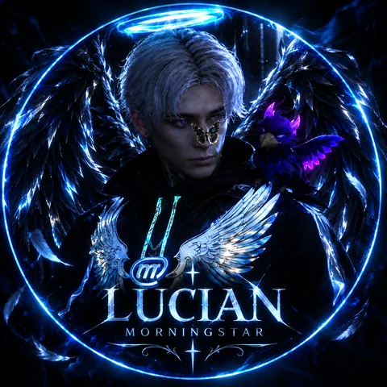

Hallo, ich bin
LUCIAN MORNINGSTAR.
Administrator / Stufe 2
Meine Bewerbung für das Admin-Team von Mirage DE 01: viel Erfahrung aus verschiedenen Projekten, ein ruhiger Kopf in hektischen Momenten und die Bereitschaft, Verantwortung zu tragen.
- 0+Stunden
Rollenspiel - ~0Jahre im
Admin-Team - 0+Projekte
gespielt
Mirage DE 01
Scrollen
Stand 2026
GrandRP✦Majestic✦StageV✦Narco City✦Mirage DE 01✦
GrandRP✦Majestic✦StageV✦Narco City✦Mirage DE 01✦
01 / Info
INFOBLATT.
02 / Online-Zeiten
ONLINEZEITEN.
0Std. am Wochenende*
* je nach Tag zwischen 10 und 20 Stunden. Unter der Woche bin ich abends verlässlich erreichbar.
Wann ich online bin
Montag – Freitag17:00 – 22:00 Uhr
5 Std.
Samstag – Sonntag12:00 – 02:00 / 03:00 Uhr
10–20 Std.
03 / Erfahrung
ERFAHRUNG INORGANISATIONEN.
Offizielle sowie inoffizielle Organisationen.
GrandRP, Majestic, Narco City u. a.
Mehrere tausend Stunden RP quer durch verschiedene Projekte.
Admin & Admin-Leitung
Rund zwei Jahre im Team, zuletzt in leitender Funktion. Den Server gibt es heute nicht mehr.
FIB · Chief of Integrity
Abteilungsleitung, HR und Mitglied im High Command.
04 / Über mich
ÜBER MICH:WARUM ICH MICH BEWERBE.
Hallo liebes Admin-Team,
mit diesen Zeilen stelle ich, Lucian (Morningstar), mich für die Position als Administrator Stufe 2 vor.
Hinter mir liegen mehrere tausend Stunden Rollenspiel auf GrandRP, Majestic und weiteren Projekten. Dazu kommen etwa zwei Jahre als Admin und in der Admin-Leitung auf StageV – einem Server, den es inzwischen nicht mehr gibt. Im FIB bin ich aktuell Chief of Integrity, leite eine Abteilung und gehöre zum High Command. Führung, Personalfragen und Verantwortung im Team sind für mich deshalb nichts Neues.
Auf Dauer nur Spieler zu sein, reicht mir nicht. Ich möchte aktiv dafür sorgen, dass das Projekt rund läuft: Spielern zur Seite stehen, Probleme klären, Fragen beantworten und – wo es sinnvoll ist – den Server und seine Konzepte weiterbringen.
Ich kann Abläufe verschlanken, arbeite mich zügig in Neues ein und behalte auch unter Druck einen kühlen Kopf. Gerade Letzteres musste ich in der Vergangenheit oft genug beweisen.
Mir ist klar, wie viel Verantwortung an dieser Rolle hängt. Ich bin bereit, sie zu übernehmen und dem Vertrauen des Teams gerecht zu werden.
Mit freundlichen Grüßen
Lucian Morningstar
Was ich mitbringe
- 01
Abläufe vereinfachen
Prozesse schlanker und klarer machen.
- 02
Schnell eingearbeitet
Neue Aufgaben verstehe und übernehme ich zügig.
- 03
Ruhe unter Druck
Auch in stressigen Momenten sachlich bleiben.
- 04
Führungserfahrung
Leitung, HR und High Command im FIB.
“Ich bin bereit, die Verantwortung zu übernehmen und dem Vertrauen des Teams gerecht zu werden.
Lucian
05 / Zusätzliches
ZUSÄTZLICHEINFORMATIONEN.
Regelwerk
Das Regelwerk kenne ich gut und weiß, wo im Rollenspiel die Grenzen liegen. Regelbrüchen gehe ich ganz bewusst weit aus dem Weg, denn alles, was ich tue, wirkt sich auch auf das Spiel der anderen aus. Ein gutes RP wünsche ich mir selbst – und genauso jedem anderen Spieler.
Vorbereitung
Bevor ich diese Bewerbung fertiggestellt habe, bin ich das Regelwerk mehrmals durchgegangen und habe mir so viel wie möglich gemerkt. Alles weiß ich sicher nicht – aber ich gebe mein Bestes, lerne gern dazu und arbeite ständig daran, besser zu werden.
Verantwortung
Würde ich ein großes eigenes Unternehmen verkaufen oder abgeben?
Auf jeden Fall. Ich weiß, dass jemand anderes Freude daran haben wird, und manche großen Entscheidungen im Leben verlangen Opfer. Diese bin ich bereit zu bringen – solange niemand anderes darunter leidet oder auf irgendeine Weise Schaden nimmt.
06 / Fazit
FAZIT.
Über ein Gespräch würde ich mich sehr freuen – und über die Chance, Team und Spielern zur Seite zu stehen und gemeinsam ein starkes Rollenspiel für alle heutigen und künftigen Spieler möglich zu machen.
Zurück nach oben↑- ◆Discordnoxiryn.tv
- ◆ServerMirage DE 01
- ◆PositionAdministrator Stufe 2
- ◆CharakterLucian Morningstar

ADMINSTUFE 2.